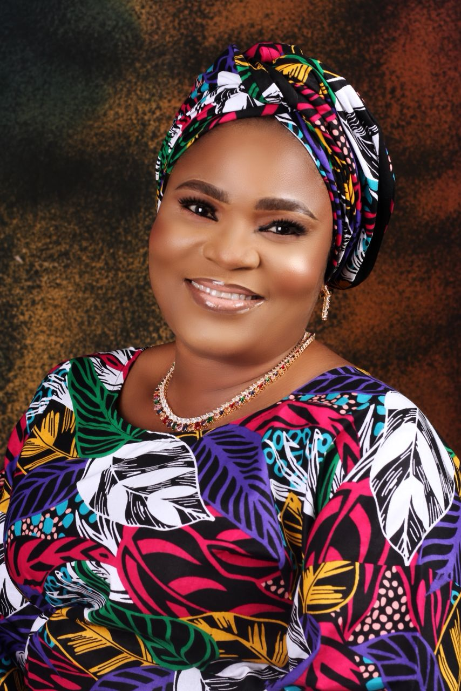
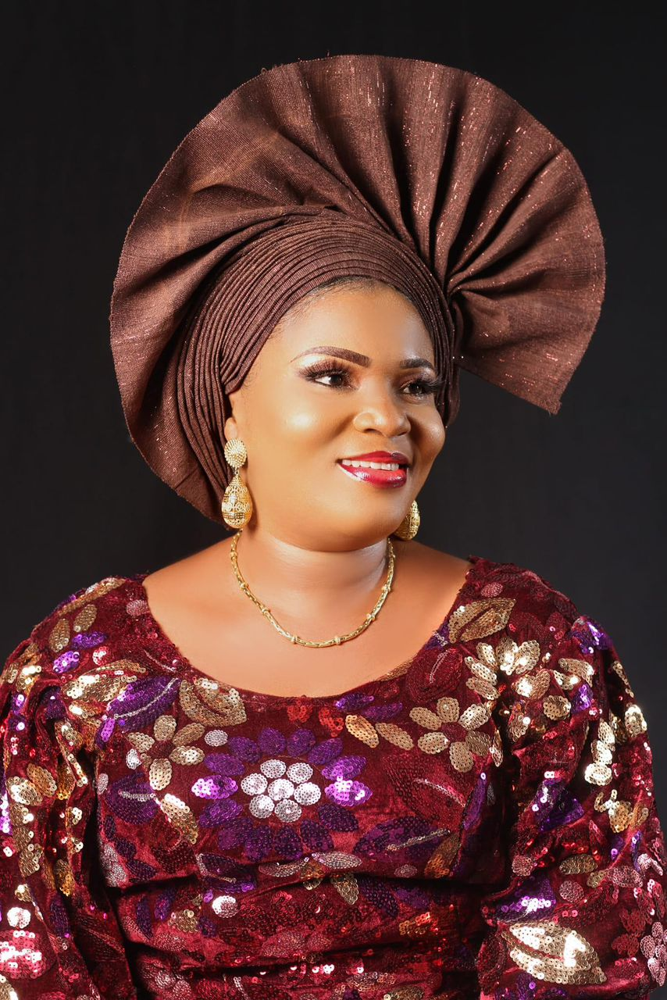

Caring for Children
Visiting motherless homes, including the Red Cross Motherless Home in Yaba, Lagos, and Mother Theresa Motherless Home in Alapere, Ketu.
Who We Are
Ladies Of Greater Plans And Hope Foundation is a community-focused organisation founded on the principles of compassion, service, empowerment and giving back to society.

Who We Are
We are committed to supporting vulnerable individuals, families and communities while creating opportunities that promote dignity, hope and a better quality of life.
Our Beginning. Ladies Of Greater Plans And Hope Foundation was founded in August 2016 with a vision to bring people together to make a positive difference in the lives of others. What began with a passion to serve has grown into a foundation committed to reaching people in need and making a meaningful impact within our communities.
Our Work & Achievements
Over the years, we have carried out various outreach and community-support initiatives across Lagos.
Visiting motherless homes, including the Red Cross Motherless Home in Yaba, Lagos, and Mother Theresa Motherless Home in Alapere, Ketu.
Visiting and supporting the elderly at MASC Care Home, Abule Egba, Lagos.
Feeding the destitute around Ketu Bus Stop, and under the bridge at Ketu.
Distributing stationery and notebooks to pupils at Ayangburen Primary School, Ikorodu.
Supporting the girl child at Ikosi Junior Secondary School, promoting dignity and continued education.
Distributing food items and essential supplies at the palace of the Oba Jagunmolu of Bariga, Oba Gbolahan Timson.
Our Journey
Since our establishment in August 2016, our journey has been filled with memorable moments, meaningful outreach programmes and opportunities to touch lives.
2016 · The Beginning
Ladies Of Greater Plans And Hope Foundation was founded in August 2016 with a vision to bring people together to serve humanity, support vulnerable individuals and contribute positively to our communities.
Caring for Children
Our team visited the Red Cross Motherless Home, Yaba, and Mother Theresa Motherless Home, Alapere, Ketu spending time with the children, providing support and reminding them they are loved and cared for.
Supporting the Elderly
We extended our care to the elderly, bringing companionship, kindness and support to elderly members of our community.
Feeding the Destitute
Recognising the challenges faced by people in vulnerable circumstances, we organised feeding outreach programmes for the destitute around Ketu.
Empowering the Girl Child
We provided sanitary support to young girls, helping promote dignity, confidence and continued participation in education.
Supporting Education
We believe education is an important foundation for a better future, so we distributed stationery and notebooks to pupils.
Widows, Widowers & Single Mothers
We reached out to vulnerable families with foodstuffs and essential support, standing with those experiencing difficult circumstances.
A Notable Encounter
Our outreach at Gbagada General Hospital led to a memorable meeting with the Honourable Commissioner for Health, Lagos State who later invited our team to his office to formally present our mission and community initiatives. See the full story and photos on our Gallery page.
Our Journey Continues
Our journey began with a vision. Our impact continues through service. And our future is filled with greater plans and greater hope.
Our Vision for the Future
Together, we can make a difference.
Together, we can give hope.
Together, we can create greater plans for a better tomorrow. ❤️🌍

Founder & CEO
“We may not be able to change the whole world at once, but together, we can change someone's world.”
Mrs. Beatrice Modupe Aladegbola
Founder & Chief Executive Officer
Mrs. Beatrice Modupe Aladegbola is a compassionate humanitarian, visionary leader, and the founder of Ladies Of Greater Plans And Hope Foundation, established in August 2016. Originally from Ikere-Ekiti, Nigeria, and now residing in the United Kingdom, she has dedicated herself to creating opportunities, restoring hope, and supporting vulnerable individuals and families.
She studied at St. Peter's Primary School, Akure; Olodi Primary School, Warri; St. Matthias High School, Akure; and Ijapo High School, Akure, before attending Lagos State Polytechnic, Ikorodu, where she studied Mass Communication. Through her leadership, the foundation has supported children, widows, single mothers, elderly people, and vulnerable members of society through humanitarian outreaches, educational initiatives, health programmes, food support, and community empowerment.
A Message From Our Founder
Welcome to Ladies Of Greater Plans And Hope Foundation. Our journey began with a simple desire, to put smiles on the faces of people who need hope, care, love and support.
Over the years, I have seen how a small act of kindness can make a tremendous difference in someone's life. This has strengthened my determination to continue building a platform where compassionate people can come together to serve humanity. I believe that when we unite our resources, talents, time and hearts, we can create meaningful and lasting change.
I invite you to join us on this journey. Whether you become a volunteer, sponsor, donor, partner, or simply share our vision, you have a role to play in making a difference. Together, let us give hope, restore dignity and touch lives.
Mrs. Beatrice Modupe Aladegbola
Founder & CEO

The Executive Council
A dedicated council of women volunteers their time, wisdom, and warmth to steward LOGPAH's mission forward. Meet the full council →


Ten years in, the story is far from finished. Come see the moments that made it, or step in and help write what's next.